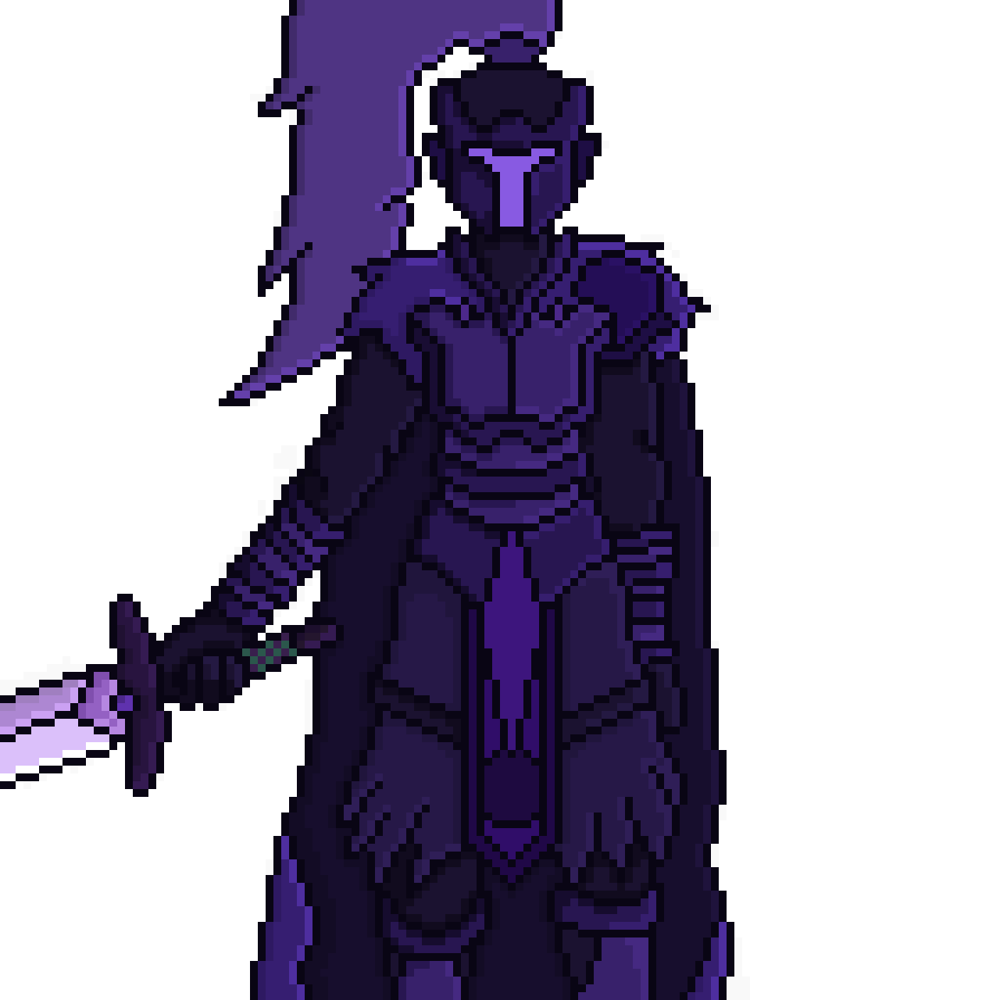

Galeria
Conheça os guardiões e inimigos do universo de Refractions of Greed.
Clique ou passe o mouse sobre os cartões para destacar cada personagem.
História
Johnny Lancaster encontra um artefato misterioso em uma ilha do Pacífico. Ao ativá-lo, realidades paralelas colidem, criando uma singularidade caótica. Dela surgem os Guardiões – entidades sombrias que refletem os piores lados da humanidade. Para escapar, John precisa derrotá-los e absorver seus fragmentos, ganhando novos poderes. Mas, à medida que avança, sua própria ambição o corrompe, culminando em um confronto final contra si mesmo — onde o verdadeiro inimigo é o próprio destino que ele ajudou a criar.
Símbolo da Inveja – A Sombra do Trono
Uma mulher outrora honrada, agora reduzida a uma sombra de sua antiga glória. Ela foi, em tempos passados, uma das mais habilidosas do reino. No entanto, sua lealdade não era ao rei, mas sim à própria ambição.
Símbolo do Orgulho - O Guerreiro do Tempo

Uma figura imponente que exala arrogância em cada movimento, a criatura da soberba é um ser de poder e vaidade, incapaz de aceitar suas próprias falhas.
Símbolo da Ira – O Rei de Nada

Aquele que há vestígios, jaz o monarca no vazio, solitário no abismo onde o tempo já não se faz presente, consumido pela própria fúria.
Símbolo da Gula – O Devorador Abissal

Uma criatura insaciável, condenada a devorar tudo ao seu redor, representando o apetite sem fim que consome até a própria essência.
Armadillo

Um tatu blindado.
Mrocego
Morcego das cavernas, ataca em bando e surpreende os desavisados com voos rasantes.